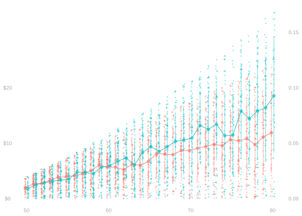
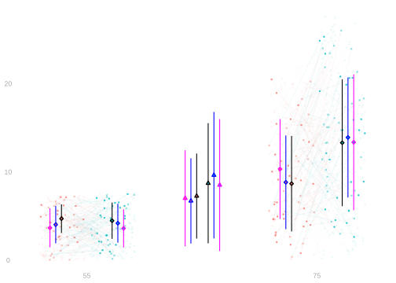

22 Randomization and Sampling
$$ \newcommand{X}{} \newcommand{Y}{}
$$
In the previous lecture, we saw the simplest causal setup: randomizing treatment to an entire population. There was no sampling—we observed everyone. The only source of randomness was treatment assignment.
Now we’ll see what happens when we combine randomization with sampling. This is the more common situation in practice: we can’t observe everyone, so we draw a sample and randomize treatment within that sample.
A Campaign Finance Example
Let’s think back to the 2006 Michigan Primary we discussed in our first lecture. But instead of mailing letters to increase turnout, we’re trying to get donations. We have a population of potential donors: a list of people who donated in 2004. We’re considering two ways of contacting them: an email or a phone call.
We run a pilot study in which we:
- Sample without replacement to select 4000 potential donors from our list
- Flip a coin for each one to choose between an email or call
- Contact them as dictated by the coin and record their donation
The results, broken down by the donor’s age, are shown above.
What We Want From Our Pilot Study
Calling costs more. We want to know whether it’s worth it. We want to know how much higher our average donation would be if we called everyone vs. emailed everyone.
One simple thing we could do is look at the raw difference in mean donations between our two groups.
\[ \hat\Delta_{\text{raw}} =\textcolor[RGB]{0,191,196}{\frac{1}{N_1} \sum_{i:W_i=1} Y_i} - \textcolor[RGB]{248,118,109}{\frac{1}{N_0} \sum_{i:W_i=0} Y_i} \approx \textcolor[RGB]{0,191,196}{8.64} - \textcolor[RGB]{248,118,109}{7.02} \approx 1.62 \]
Do you think this works?
Two Sources of Randomness
The Idea
Let’s look at what happens when we randomize treatment to a sample drawn from our population. We’ll start by looking at a subset of our population of potential donors: the ones aged 55 and 75. Everyone has two potential outcomes: the amount they donate if untreated (red) and the amount they donate if treated (green).







Population. Each person has two potential outcomes: the amount they’d donate if emailed (red) and if called (green). The connected dots show these pairs.
Sampling variability
Sample 1. We draw a sample. People not sampled fade out. This is our first source of randomness—different samples give different data.
Sample 2. Draw again. Different people are selected. The sample composition changes.
Sample 3. And again. Each draw is different. This is sampling variability.
Randomization variability
Randomize 1. Now fix the sample (Sample 3) and flip coins for treatment. ✗ marks unrealized potential outcomes. This is our second source of randomness.
Randomize 2. Same sample, flip again. Different people get treated. The group compositions change.
Randomize 3. And again. Same sample, different treatment assignments. This is randomization variability.
The key insight: we have two independent sources of randomness. Sampling determines who we observe. Randomization determines which potential outcome we observe for each person. Both contribute to the variability of our estimates
Formalizing the Process
Sampling and Randomization

Let’s review the process that gives us our observed treatment+covariate+outcome triples \((W_1, X_1, Y_1) \ldots (W_n,X_n,Y_n)\).
We draw covariate+potential-outcomes triples \(\{X_i, Y_i(0), Y_i(1)\}\) uniformly-at-random from the population of all such triples \(\{x_1, y_1(0), y_1(1)\}, \ldots, \{x_m, y_m(0), y_m(1)\}\). \[ \{ X_i,Y_i(0), Y_i(1)\} = \{x_J, y_J(0), y_J(1)\} \qfor J=1 \ldots m \qqtext{ each with probability } 1/m \]
We choose treatments \(W_1 \ldots W_n\) by some random mechanism, independent of everything else. These determine the potential outcomes we observe.
\[ Y_i = Y_i(W_i) \qqtext{ for } W_1 \ldots W_n \qqtext{independent of} \{X_1,Y_1(0), Y_1(1)\} \ldots \{X_n, Y_n(0), Y_n(1)\} \]
What we visualized was a special case in which we used sampling with replacement in Step 1 and coin flips in Step 2. The full-population case from the previous lecture was a special case where we drew a sample of the same size as the population without replacement (i.e., we got everyone) and used shuffling to assign treatment.
Causal Identification

With this sampling and randomization scheme, we can rewrite our potential outcome means as expected values involving the random variables that we observe.
\[ \frac{1}{m}\sum_{j=1}^m y_j(w) = \mathop{\mathrm{E}}[Y_i \mid W_i=w] \]
\[ \begin{aligned} \frac{1}{m}\sum_{j=1}^m y_j(w) &\overset{\texttip{\small{\unicode{x2753}}}{sampling uniformly-at-random}}{=} \mathop{\mathrm{E}}[Y_i(w)] \\ &\overset{\texttip{\small{\unicode{x2753}}}{irrelevance of independent conditioning variables}}{=} \mathop{\mathrm{E}}[Y_i(w) \mid W_i=w] \\ &\overset{\texttip{\small{\unicode{x2753}}}{if we've flipped $W_i=w$, $Y_i(W_i)=Y_i(w)$. It's a bit like the indicator trick.}}{=} \mathop{\mathrm{E}}[Y_i(W_i) \mid W_i=w] \\ &\overset{\texttip{\small{\unicode{x2753}}}{Definition. $Y_i=Y_i(W_i)$.}}{=} \mathop{\mathrm{E}}[Y_i \mid W_i=w] = \mu(w) \end{aligned} \]
We call this rewriting process identification. We’ve ‘identified’ a summary of the potential outcomes if we have an equivalent formula for it that doesn’t involve potential outcomes. We need randomization to have equivalences like this.
Unbiasedness

This identification result reduces today’s unbiasedness question to one we’ve addressed before: the unbiasedness of column means.
\[ \mathop{\mathrm{E}}[\hat\mu(w)] \overset{\texttip{\small{\unicode{x2753}}}{unbiasedness of column means}}{=} \mu(w) \overset{\texttip{\small{\unicode{x2753}}}{identification}}{=} \mathop{\mathrm{E}}[Y_i(w)] \]
When we addressed that in Lecture 6, we assumed pairs \((W_i,Y_i)\) were sampled with replacement. We’re being more general here, so here’s a direct proof of unbiasedness. It’s very similar to Lecture 6’s.
\[ \begin{aligned} \mathop{\mathrm{E}}\qty[\frac{1}{N_w}\sum_{i:W_i=w} Y_i ] &\overset{\texttip{\small{\unicode{x2753}}}{via the law of iterated expectations}}{=} \mathop{\mathrm{E}}\qty[ \mathop{\mathrm{E}}\qty[ \frac{1}{N_w}\sum_{i=1}^n Y_i \mid W_1 \ldots W_n] ] \\ &\overset{\texttip{\small{\unicode{x2753}}}{linearity of conditional expectation}}{=} \mathop{\mathrm{E}}\qty[ \frac{1}{N_w}\sum_{i=1}^n \mathop{\mathrm{E}}[Y_i \mid W_1 \ldots W_n] \ 1_{=w}(W_i) ] \\ &\overset{\texttip{\small{\unicode{x2753}}}{indicator trick}}{=} \mathop{\mathrm{E}}\qty[ \frac{1}{N_w}\sum_{i=1}^n \mathop{\mathrm{E}}[Y_i(w) \mid W_1 \ldots W_n] \ 1_{=w}(W_i) ] \\ &\overset{\texttip{\small{\unicode{x2753}}}{irrelevance of independent conditioning variables. The assignments $W_1 \ldots W_n$ are independent of $Y_i(w)$. }}{=} \mathop{\mathrm{E}}\qty[ \frac{1}{N_w}\sum_{i=1}^n \mathop{\mathrm{E}}[Y_i(w)] \ 1_{=w}(W_i) ] \\ &\overset{\texttip{\small{\unicode{x2753}}}{via linearity, i.e. pulling out the constant $E[Y_i(w)]$}}{=} \mathop{\mathrm{E}}[Y_i(w)] \mathop{\mathrm{E}}\qty[ \frac{1}{N_w}\sum_{i=1}^n 1_{=w}(W_i) ] = \mathop{\mathrm{E}}[Y_i(w)]\frac{N_w}{N_w} = \mathop{\mathrm{E}}[Y_i(w)] \\ &\overset{\texttip{\small{\unicode{x2753}}}{sampling uniformly-at-random}}{=} \frac{1}{m}\sum_{j=1}^m y_j(w) \end{aligned} \]
Comparing the Two Setups
| Full-Population Randomization | Randomization + Sampling | |
|---|---|---|
| Who do we observe? | Everyone in the population | A sample from the population |
| Sources of randomness | Treatment assignment only | Treatment assignment AND sampling |
| Target | \(\bar\tau = \frac{1}{m}\sum_j \tau_j\) | Same |
| Estimator | \(\hat\tau = \hat\mu(1) - \hat\mu(0)\) | Same |
| Unbiased? | Yes | Yes |
| Variance | From treatment assignment only | From both sources |
The key insight is that randomization makes our estimator unbiased in both cases. The difference is in the variance: when we also have sampling variability, there’s more uncertainty in our estimate.